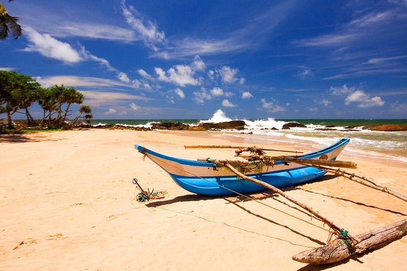
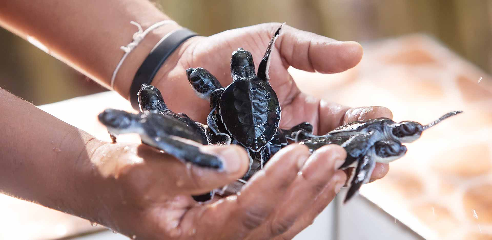

|
SMALL INTRODUCTION All visitors to Bentota enjoy visiting the Bentota Turtle Hatchery Project. The picturesque golden sands that entice you to our island also provide numerous endangered turtle species, such the Olive Ridley and Leatherback turtles, an alluring breeding site. The project's objective is to preserve and safeguard the eggs against predators and other threats. HISTORY
To prevent the extinction of the turtles, the Sri Lankans established the Turtle Hatchery. In the past, people—typically fishermen—would gather turtle eggs and sell them to anybody willing to pay a greater price. These eggs were fed and cared for when the turtle hatchery opened until they were 2 to 4 years old. There are several turtle species, including the Green Turtle, Leatherback, and Olive Ridley. Despite becoming extinct, fishermen continue to catch turtles for their shells and fish, which is a very profitable industry. |
 |
 |
IMPORTANCE When left on their own, turtle eggs are vulnerable to predators and helpless against them. Additionally, there is a chance that local fisherman may find the eggs and sell them to poachers, who would then sell them on the black market. In order to offset this, the hatcheries pay the fisherman more for their eggs. When the eggs arrive at the hatchery, they are carefully buried in sand until they break free of their shells, at which point they are transported and put into tanks where they will spend the first few days of their life. This increases their chances of surviving by giving them a chance to get stronger before being returned to the perils of the water. In this way, several turtle species are preserved. |
 |